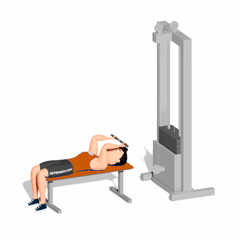

Tríceps Testa na Polia Baixa

O exercício trabalha o fortalecimento e hipertrofia dos músculos tríceps, com enfoque o tríceps braquial.
Ficha Técnica
Tipo: Musculação
Grupo Muscular: Tríceps
Aparelho: Nenhum
Músculos: Nenhum
Como realizar
- Posicione um banco de exercício em frente a uma polia baixa equipada com um puxador reto. Deite-se no banco com a cabeça próxima ao aparelho;
- Segure a barra com as palmas das mãos voltadas para fora;
- Estenda os braços totalmente para que eles formem um ângulo de 90 graus com o tronco;
- Flexione os cotovelos para baixar o peso enquanto mantém a parte superior do braço fixa;
- A barra voltará para a posição de repouso, logo acima da testa;
- Faça uma pausa por um momento e, em seguida, flexione os tríceps retornando o peso para a posição inicial.
 RC STORE
RC STORE